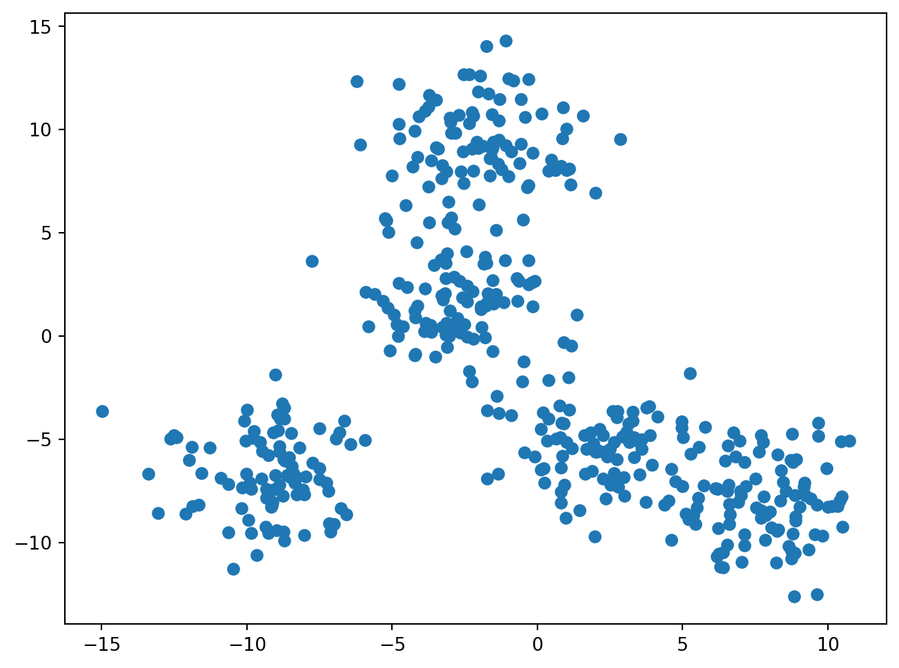
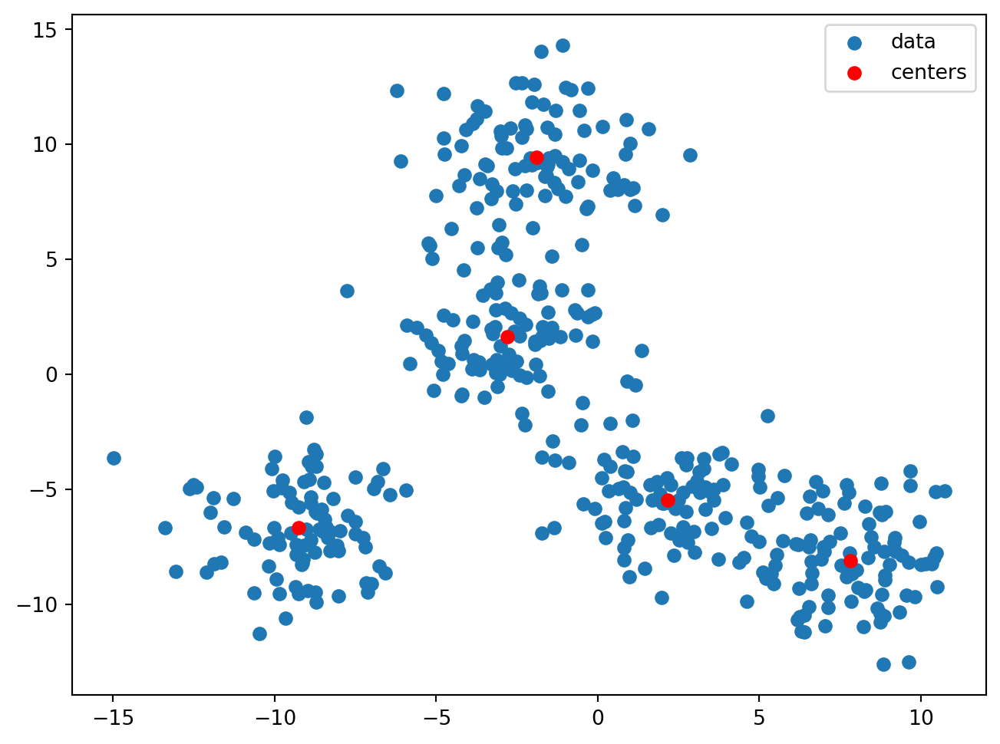
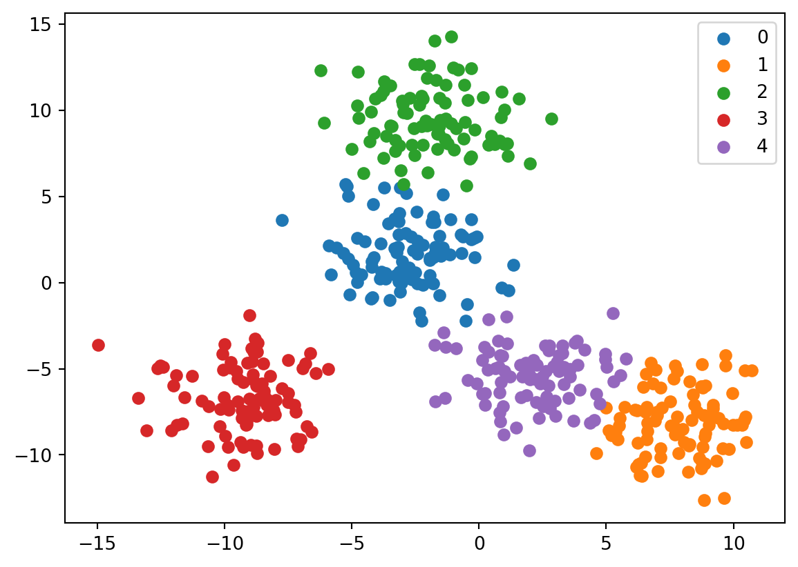
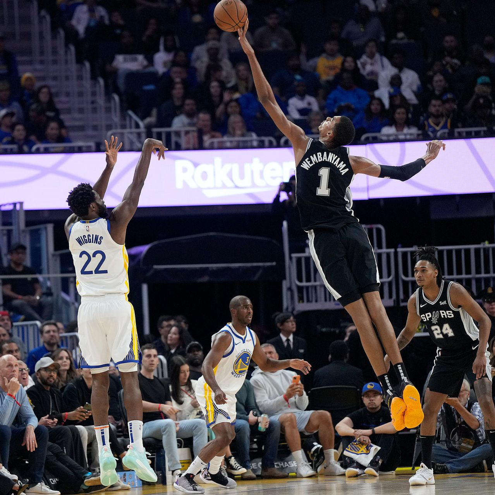
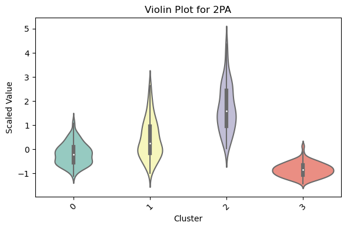
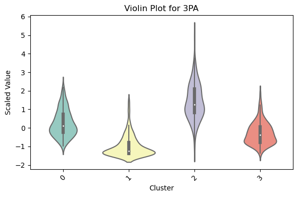
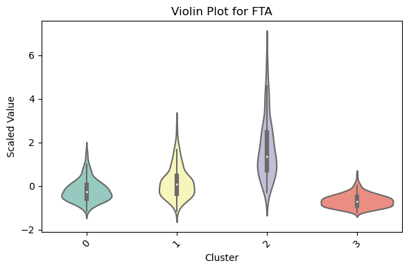
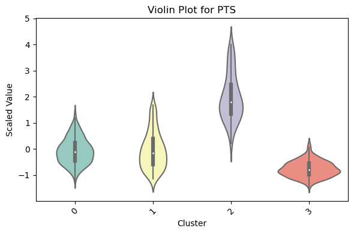
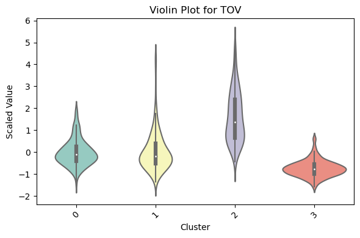
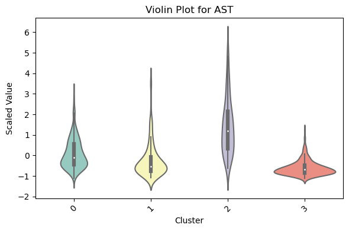

Expectation Maximization
The Expectation Maximization (E-M) Algorithm is an iterative approach to finding maximum likelihood estimates for latent variables (since the likelihoods we want to maximize are only indirectly available). It is comprised of an estimation step, which tries to estimate the unknown variables, and a maximization step, which then tries to optimize the parameters of the model to better explain the data.
The unknown parameters are sometimes written as \(\phi\) or \(\Theta\), and we can call the latent, “nuisance,” variables \(J\), and the observed data \(U\). So, from above, the process can be roughly seen as \[ \Theta^* = \operatorname*{argmax}_{\Theta} \sum_{J\in\mathcal{J}^n} P(\Theta, J|U) \] Since this shows us maximizing the posterior probability of parameters \(\Theta\) given our data and we are summing over \(J\) in order to marginalize out our latent variables (Dellaert, 2002).
This process was first rigorously defined on the exponential family, where the probability density functions take the form \[ f(x|\phi) = b(x)\exp(\phi t(x)^T/a(\phi))\]
where \(\phi\) is a \(1\times r\) parameter vector and \(t(x)\) is a \(1\times r\) vector of sufficient statistics for the data. Our “natural parameter” for these exponential distributions is given by some \(r\times r\) linear transformation.
To run the algorithm on this example, we first enter the expectation step, and take \(t^{(p)}=E[t(x)|y,\phi^{(p)}]\) with the \((p)\) denoting the \(p^{th}\) cycle of the algorithm, trying to estimate the vector of sufficient statistics for the exponential distribution.
The maximization step, is then taking the equation \(E[t(x)|y,\phi^{(p)}]=t^{(p)}\) and we call the solution to this equation \(\phi^{(p+1)}\). We then plug in \(\phi^{(p+1)}\) to the expectation step and keep iterating (Dempster et al. 1976).
One of the coolest parts of this algorithm is that it actually converges to a local maximum almost every time (Dempster et al. 1976). Dempster, Laird, and Rubin may have been slighly optimistic about how often E-M converged, due to a misuse of the triangle inequality, but C.F. Jeff Wu found and corrected that mistake, and came out with a more concrete understanding of when the algorithm converges, and to what it converges (Wu, 1983). While the algorithm may not converge to a local maximum every time, the likelihood that the parameters the algorithm optimizes each step are better estimates increases after each cycle of the algorithm. And thus, for some E-M sequence \(\phi_p\), if \(L(\phi_p)\) is bounded above, then E-M converges to some \(L^*\).
In Dempster, Laird, and Rubin’s seminal paper Maximum Likelihood via the ‘EM’ Algorithm, they enumerate the process detailed above, proved the convergence, and later on, proposed that E-M could be used to in finite clusters. This foreshadowed the most common usage of the algorithm, clustering, or more specifically, dividing unlabeled data into nice clusters. For example, if we know that our raw data is comprised of unique groups represented by different probability distributions, we can use the E-M algorithm to systematically change the parameters for the estimated distributions of these groups to maximize the probability that the data belongs to the proposed clustering.
Gaussian Mixture Modeling
One of the most common usages of expectation maximization, and specifically clustering, is Gaussian Mixture Modeling (GMM) (Hasselblad 1966). This process is essentially assuming that each group you are trying to sort out is represented by a multivariate normal distribution. This is often a very convenient technique to use because things often actually do follow normal distributions because of the central limit theorem and because once we have clusters that are normal, it is much easier to do inference on the clusters. In industry and other settings where statisticians have to communicate their results to non-statisticians it is also helpful to be able to talk about results in the context of normal distributions.
GMMs are used to observe clusters everywhere. They are used to create customer archetypes in retail, to better understand the different ways people shop, they are used in medical scenarios in order to identify types of tumors for cancer detection.
Example
For a flavor of the effectiveness and accuracy of the algorithm, I will make a set of five blobs of data, each with a center, and then I will show how accurately the algorithm can cluster the data into the blobs that created the underlying data.
Now we fit the algorithm with the prior understanding that the data is made of five clusters of approximately normal data.
We next fit the model and let it learn from the data, in the next plot, we plot the centers that the data came up with, and on the graph after that we will color each of the clusters the algorithm identified uniquely.


The accuracy is great! This problem wasn’t terribly difficult, but it is better at understanding ‘groups’ of things than other classification methods in statistics and similar fields. Since many situations don’t have linearly separable data, like the example above, clustering models can be a great choice over other models that are useful in other situations, such as regression models (which are sometimes used for clssification in separable cases, i.e. gentoo penguin dataset).
Consider a dataset with millions of points and possibly hundreds or thousands of dimensions. E-M allows for insights in incredibly complex problems like very sensitive anomaly detection for genetic disorders by clustering genes or proteins.
The NBA

Basketball is changing. Players like Stephen Curry have changed perceptions around what a point guard is supposed to be, Nikola Jokic is reinventing the center position, and some teams are playing with centers who are shorter than 6’5”. Another even bigger change is the advent of extremely tall players playing seemingly positionless basketball, the trend started by players such as Kevin Durant and Kristaps Porzingis, and continued by younger players like Chet Holmgren and Victor Wembanyama.
People are playing basketball differently. To effectively understand the game, the old labels of point guard, shooting guard, center, power forward, and small forward don’t seem to suffice, which means that we want to find new labels for positions in order to regroup players to better understand modern roster construction.
This seems to be a problem uniquely well suited to clustering. I plan on looking at a few things, how the clusters of players in the modern NBA compare to the positions that players are assigned to. Secondly, I am curious if the NBA has become more specialized, i.e. if there are more than five positions, and players are acquired and used for more specific purposes.
There are a few instances of the same player showing multiple times in the dataframe since people were traded and played for different teams throughout the season, so I took the averages of all of their values to create a set of stats for the season for them.
So now that we have this data, I will take all of the features besides position, age, team, games played, games started (As well as some irrelevant features, i.e. those that are just linear combinations of other features) and will use them to create clusters so we can start to draw some conclusions. We should feel pretty good about modeling the clusters as gaussian since there are over eight hundred players that played in 2022 which means we should feel alright about assuming normality across each predictor, especially since we have data across 6 seasons.

This plot shows metrics Bayesian Information Criterion (BIC) and Aikake Information Criterion (AIC) plotted against the number of clusters to see which number of clusters would most likely produce the data while also penalizing overfitting. The lower the value the better fit the model is for the data. Both of the metrics are based on the likelihood function for the mixture models and the main difference between them is that BIC punishes models with more parameters more than AIC, as we can see from the plot, since the BIC is minimized at right around 4 clusters and AIC continues to decrease as the number of components reaches 15. The AIC is equal to \(2k-2\ln(L)\) and the BIC is equal to \(k\ln(n)-2\ln(L)\) where \(k\) is the number of parameters. So as the likelihood that the model proposed (dependent on the number of clusters) has a higher likelihood of explaining the data, the AIC and BIC both decrease.
This graph essentially says that the model that explains the data the best without overfitting has 4 clusters (potentially saying that the NBA is less specialized than in the past).
Results
The following violin plots (which have been scaled) show the distributions for each cluster for each statistic.


Cluster 2 obviously attempts what looks like significantly more two point shots and three point shots. Cluster 1 attempts the second most 2 pointers while also completing the least three pointers which contrasts with Cluster 3 which attempts the least two pointers while attempting more three pointers compared to the other clusters.


From the first two plots, it makes sense that Cluster 2, on average, scores the most points because they attempt the most 2PT and 3PT shots. Clusters 0 and 1 score the next most points on average, probably due to the larger number of 2PT attempts by Cluster 1 and the larger number of 3PT attempts from Cluster 0. Cluster 0 has a much larger mean number of free throws attempted while Cluster 3 has a significantly lower number of free throws attempted.
This leads us to start to see a picture being painted about these players, Cluster 2 in particular has the ball a lot of the time, they score the most points, they shoot the most free throws, they are high usage players.


Cluster 2 also has the most turnovers on average, while Cluster 3 commits considerably fewer average turnovers. Clusters 1 and 3 have the fewest average assists and Cluster 0 falls somewhere in between 0 and 2.
Another way we can better understand these clusters is see which players are most representative of each cluster, letting us use domain knowledge about the sport to draw further conclusions about how players get sorted into clusters. We just use the smallest distance between the point for each cluster’s center, and any given player in the set.
For cluster 0, the player closest to the center is Patty Mills, while he is not a huge star, he is known for being a great supporting player, and even later in his career coming off the bench to add quick points. This helps us validate our violin plots, since he is the closest player to the center of the cluster, we can assume that he is relatively close to the center of each of the marginal normal distributions for each statistic, he doesn’t take a lot of shots since he is playing a more supportive role, but since he is coming in to try and score quickly he is shooting more threes than twos and since players like Mills are usually primarily shooters, they won’t attempt as many foul shots, since they aren’t attempting as many 2 points shots near the rim. Other players in this cluster include Seth Curry, Shake Milton, and Bruce Brown (who embodied this role perfectly in last springs championship run). This is the most common cluster for players to fall into (out of players in the last 6 seasons).
The center of Cluster 1 is Robin Lopez, the less famous brother of another member of Cluster 1, Brook Lopez. These players are essentially the classical center, they rebound more than anyone else, they take far more twos than threes, they don’t assist much, they take more foul shots since they get fouled near the rim. This is by a considerable margin, the smallest cluster. It seems fair to postulate that this is because of their lack of shooting ability, but there is still a significant number of players that play this position.
For Cluster 2, the center of this cluster is Chris Paul. He is a perfect example of this type of player, while he doesn’t score as much as other members of this cluster (Jokic, Steph Curry, Luka Doncic among them) he plays with a high usage rate and gets everything done for his team, he assists, he shoots, he rebounds, he draws fouls. These players are almost all guards and forwards and are usually the ‘franchise player.’ This is the second smallest cluster, probably due to the fact that teams can only have one or two players that really dominate possession and also due to the fact that it is quite difficult to be a player even comparable to Chris Paul and Stephen Curry.
Cluster 3’s center is Duncan Robinson, a rare liberal arts college baller. These are players who play low minutes, and their only job is to shoot threes and play some defense. These guys are not expected to generate assists or rebounds. Another good example of a player in this cluster is PJ Tucker, who has never averaged too many points but has continually shot three pointers with high accuracy and is known for his strong defensive play. This is the second largest cluster out of current players, presumably because of the transition to more three point focused offenses that started in the early-mid 2010s.
Using common model fit measures like BIC and AIC we can see that the GMM approach fits the task of clustering NBA players. We can also see that a set of four clusters can explain the approximate roles of players through statistics rather than what sometimes falls to heuristics. I also find it interesting that the best number of clusters was less than 5, instead of more than 5. I had suspected that the NBA had become more specialized, which could possibly still be true, but there are still fewer positions. Which seems to bring us to the conclusion that either players are being asked to handle a broader range of assignments on court, the game has changed such that there are fewer things that coaches need players to do on court, and they are just asked to specialize on those things, or that any other specialization that players have to do beyond the clusters that we identified is actually on the defensive end, which is much harder to measure statistically.
My code for this post can be found at my Github
References
Dellaert, Frank. “The Expectation Maximization Algorithm - Web.Itu.Edu.Tr.” Georgia Tech, 2002, web.itu.edu.tr/~sgunduz/courses/verimaden/paper/em-paper.pdf.
Dempster, Arthur P, et al. “Maximum Likelihood from Incomplete Data via the EM Algorithm.” Harvard.edu, 2022, dash.harvard.edu/handle/1/3426318, http://nrs.harvard.edu/urn-3:HUL.InstRepos:3426318. Accessed 18 Dec. 2023.
Murphy, K. P. (2022). Probabilistic Machine Learning: An introduction. MIT Press.